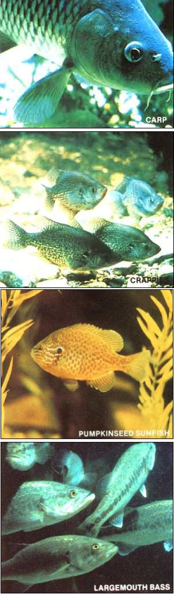
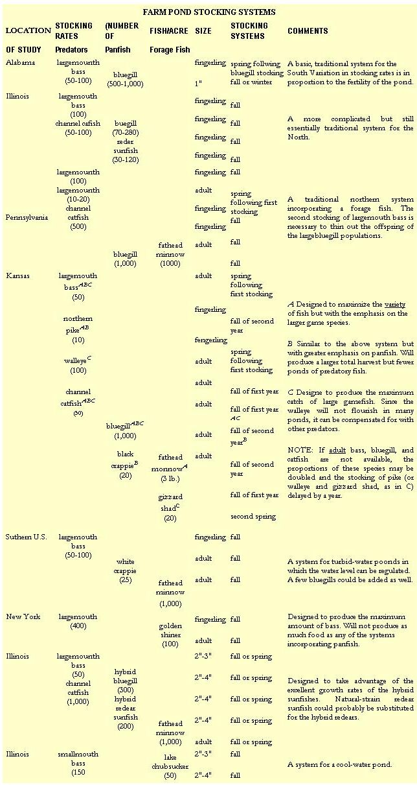

The farm pond is something of an American institution. After all, we've been building ponds and stocking them with fish for as long as there have been farms in this country. And for good reason: For a minimal outlay of cash and labor, a pond not only provides the enterprising homesteader with a means of home fish production but also furnishes water for livestock and crops, creates wildlife habitats, offers a source of recreation, and adds an aesthetically pleasing element to his or her property.
The considerable virtues of the farm pond were perhaps given their widest acclaim during the Great Depression-Dust Bowl years of the late 1930's and early 40's, when the newly formed U.S. Soil Conservation Service began to promote such bodies of water as aids to soil and water conservation, and as sources of food and recreation. As a consequence of the original SCS program, the term farm pond has come to mean a particular type of pond . . . specifically, a 1/4- to 5-acre artificial body of water stocked with warm-water fish that reproduce naturally within the pond environment. Because food production is just one of the many purposes of the pond, the fish populations are not intensively managed (as they would be in commercial aquaculture operations). Harvesting is done by hook and line, and the fish are intended for home use rather than for sale.
There are now more than two million farm ponds in the United States, and-as might be expected-an orthodoxy of farm pond management practices has developed over the years. One tradition concerns the stocking technique. SCS and state conservation agents almost invariably tell prospective pond-builders to stock their home-scale reservoirs with a mixture of largemouth bass (Micropterus salmoides) and bluegill sunfish (Lepomis macrochirus). When an inquisitive farmer asks about stocking other fish species, he or she is usually just told that it "won't work". In fact, experimental pond stocking is discouraged primarily for two reasons: First, since certain species or species combinations have been shown to be detrimental to the farm pond ecosystem, a concerted effort is made to avoid those possible groupings . . . and second, extension workers are trained in the current doctrine: Their job is to offer practical advice, not to oversee experimental projects.
However, as this article will point out, there are perfectly suitable substitutes for and supplements to largemouth bass and bluegills . . . and there's plenty of room for more experimentation, too. In the following paragraphs I'll discuss some of these alternatives, as well as a few of the popular fish that generally are not suitable for the farm pond.
A NOTE ABOUT NICHES
Before you begin to dabble with stocking alternative species of fish, it's important to have a clear understanding of how the typical scheme works. The bluegill, the smaller of the two members in the classic farm pond community, is stocked in greater numbers than the largemouth bass. As a panfish, the bluegill provides the bulk of the catch and serves as a food source for the bass. The bass, then, provides more exciting recreational fishing while acting as a predator, controlling the bluegill population so that stunting of these rapid reproducers doesn't occur. However, this theory works well in practice only when the pond owner aids the bass by regularly harvesting the bluegills. Furthermore, as long as the fish are reproducing naturally in the pond, this rule will hold true . . . regardless of what species are added or substituted. So although it may be more challenging to pursue the larger fish, you'll find that the key to maintaining a balanced population is to harvest a far greater proportion of panfish than predators.
Alternative species, therefore, may be predators (occupying a niche corresponding to that of the largemouth bass) or panfish (filling the role of the bluegill). There is also a third possibility: the addition of forage species-fish intended not for human consumption but as a supplement to the predator's diet-into the system. With this basic farm pond scheme in mind, let's start at the top of the food chain.
PREDATORS
Smallmouth bass (Micropterus dolomieui): The most frequently considered substitute for the largemouth bass is this close relative. In fact, many anglers actually prefer to stock the smallmouth bass because of its superior taste and sporting qualities. But while the largemouth is content in water temperatures of 80 °F or above, the smallmouth requires a cooler environment ... and since the majority of farm ponds reach temperatures in the 80's during summer, many efforts to maintain smallmouth bass in home-scale operations have failed. If your pond stays consistently cool during the summer, however, you might want to stock this species.
Catfish: In much of the U.S., the best supplemental species to the largemouth bass are the catfishes. And by far the most widely chosen species is the channel catfish ( Ictalurus punctatus ), simply because it's an important commercially cultured fish, so stock for it is readily available. The blue catfish ( Ifurcatus ) and the white catfish ( I catus ) are said to be easier to catch on hook and line, while the flathead catfish ( Pylodic tis olivaris )-though not as tasty as the other cats-grows to an extreme size and can be particularly helpful in controlling excess populations of forage fish.
Any of these large catfish will readily reproduce in farm ponds if suitable nesting sites (which can be made by sinking oldfashioned milk cans or similar-sized containers in the pond) are available. One disadvantage of stocking catfish and largemouth bass together, though, is that the bass will eventually eliminate the catfish by preying on their young.
Chain pickerel (Esox niger): If I had a farm pond anywhere on the Atlantic coastal plain from New Brunswick to Florida, I'd consider stocking pickerel. Although I don't know. of any farm ponds that are actually stocked with pickerel, this species' favored natural habitat is small bodies of water, where it's a frequent associate of both the largemouth and smallmouth bass. In my opinion, the pickerel-though bony-is a superior food fish to the largemouth bass and is the equal of the smallmouth. In fact, whereas many anglers keep the bass they catch, and throw back the equally sporty pickerel, I often do just the opposite! An added advantage of stocking pickerel is that these fish feed voraciously all year long: You can catch them during the dog days of August and through a layer of ice in the winter (times when bass are sluggish and hard to interest in bait or lures).
Northern pike (Esox lucius): This big cousin of the pickerel is the largest predator species suitable for the farm pond. It's not generally recommended for such small bodies of water, but some freshwater aquaculturists in the northern states have had success with pike, and it's a standard choice of pond fish cuiturists in Europe. Keep in mind, though, that to sustain reproduction of pike, the pond must have a marshy area that can be flooded in the early spring.
Walleye (Stiaostedion vitreum): Few freshwater fishes can rival the flavor of the walleye. However, this species will thrive only in larger ponds . . . and unless the body of water has a sizable stream flowing into it or an upwelling of water through the bottom, reproduction by the walleye is out of the question. Other factors include the walleye's requirement for cool water and its voracious appetite for fish (more than can be provided by bluegills alone, so you'll also need to stock a forage species).
PANFISH
Sunfish: Surprisingly few fishes other than the sunfishes and their relatives show promise for filling the bluegill's niche in the traditional farm pond community. The redear sunfish (Lepomis microlophus) is a giant among the sunfishes, growing faster and reaching larger sizes than the bluegill. Unlike the rest of its kin, the redear does not tend to become overpopulated in pond environments. On the one hand, this low reproductive capacity is an advantage . . . but it also means that this species doesn't provide adequate forage for bass. Many anglers fault the redear for not feeding at the surface, too, since that limits the methods by which it can be caught. For these reasons, the redear is usually stocked together with the bluegill.
The well-known pumpkinseed sunfish (Lepomis gibbosus) is generally much smaller than the bluegill, but in its natural pond environment this species may attain the excellent pan size of eight'or nine inches . . .and the pumpkinseed will tolerate cooler water temperatures than will either the redear or the bluegill. Some folks even stock the pumpkinseed solely for its incomparable beauty. This species is quite prone to stunting, though.
Apart from the bluegill, redear, and pumpkinseed sunfishes, none of the naturals-train Lepomis species are suitable for farm pond fish culture. However, some of the hybrid sunfishes do show promise for homestead aquaculture. Most attention to date has been focused on the so-called hybrid bluegill, produced by crossing a female bluegill with a male green sunfish. The hybrids grow much faster than either parent species and are virtually sterile, thus eliminating the problem of overpopulation. This also means, of course, that "seed" has to be purchased annually . . . and although the fish are now available commercially, stocking them can prove quite costly.
Crappie: The black crappie (Pomoxis nigromaculatus) and the white crappie ( P. annularis) belong to the family Centrarchidae, along with the basses and the sunfishes. The crappies actually occupy a niche between the basses and the sunfishes: That is, they prey on small fish (which the sunfishes. rarely do), but since they lack the basses' cavernous mouths, crappies are limited as to the size of their quarry. As a general rule, crappies either die out or become stunted in farm ponds.
The conventional wisdom is that it takes a "large" pond (this could be anywhere from 3 to 100 acres!) to produce good crappie harvests. The fish has been managed in some small ponds, though, with the key to success being a variable water level (one that's high in the winter and low in the summer). Unfortunately, most ponds aren't set up to permit this sort of manipulation . . . and there's also a trade-off involved, as this degree of fluctuation in the water level is detrimental to sunfish. Other factors that favor the crappies are the presence of forage fish, streams entering the pond, and heavy continuous harvesting. One distinct advantage of the white crappie, however, is its tolerance of turbidity . . . so if you find it impossible to keep your water clear enough for good bass and bluegill fishing, this species may be worthwhile.
Rock bass (Ambloplites rupestris): As its name suggests, the rock bass prefers a stony bottom . .. it won't thrive when raised over a bed of mud. Like the crappies, the rock bass occupies a niche between the sunfishes and the larger basses. In its natural habitat, this species is a frequent associate of the smallmouth bass, but the pairing is best avoided in farm pond fish culture. Rock bass are easy to catch and do well in cool-water ponds . . . but on all other counts the smallmouth bass is the superior candidate. My guess is that every pound of rock bass produced means one pound less of potential smallmouth bass.
Bullheads: In my opinion, the flavor of these small catfish is unsurpassed among the North American freshwater fishes. As bottom feeders, bullheads aren't serious competitors of any of the other farm pond fish mentioned above . . . but in a small, shallow body of water, a dense population of bullheads - with their constant rooting - will cause considerable turbidity, to the detriment of other species. And as with most of the smaller farm pond fishes, bullheads must be heavily harvested to prevent stunting. It's even more difficult to control a bullhead population by angling than it is to keep up with a bluegill or crappie population, but - unlike the centrarchid fishes - bullheads are easy to catch in traps.
Of this fish's several species, the brown bullhead (Ictalurus nebulosus) is the best for farm pond culture. A promising stocking system involves the substitution of the brown bullhead for the bluegill, with the channel catfish playing the role of the largemouth bass.
FORAGE FISH
Some species commonly raised as bait "minnows" may be stocked in the farm pond as forage for predator fish. This practice should not be confused with actual bait fish culture, however: It's simply not possible to produce a lot of bait minnows in a pond stocked with predatory fish!
The main benefit of stocking forage fish is that by doing so you can produce large predators in less time than would be required if panfish were the only available food source. The trade-off is that, since most predators will prefer a soft-bodied, streamlined minnow to a dish-shaped, spiny mouthful (such as a bluegill), stocking forage fish increases the danger of stunting your bluegills. Most forage fish are also to some degree competitive with the panfish for food.
Popular bait fishes: Two readily available bait fish that are well adapted for use as forage fish are the golden shiner (Notemigonus crysoleucas) and the fathead minnow or "tufy" (Pimephales promelas). The latter species rarely exceeds four inches in length, and while the golden shiner will occasionally reach as much as ten inches, it isn't worth catching for eating.
Gizzard shad (Dorosoma cepedianum): This small, herringlike fish will thrive in farm ponds and, because it's a phytoplankton feeder, will profit from fertile, slightly "green" water.
Mosquito fish (Gambusia affinis): This tiny fish (its maximum length is two inches) makes good forage, and - as its name implies - it's also useful in controlling mosquitoes. This species is best able to sustain its population in ponds in which channel catfish are the principal predators, most likely because mosquito fish like to occupy the tiny spaces in weeds and brush where the catfish seldom venture.
Suckers: The family Catostomidae may be the "sleeper" among the North American farm pond fishes. As far back as 1966, the lake chubsucker- Erimyzon sucetta - was recommended as forage for bass (it's also one of the few fishes that will control filamentous algae) . . . and the black-tail red-horse (Moxostoma poecilurum) has been shown to improve the production of channel catfish. Both of these species attain sizes large enough to qualify them as panfish, so they can be considered as substitutes for the bluegill, as well.
FARM POND UNSUITABLES
Although this article can cover only a smattering of the fish that might be raised in the farm pond, you can assume that those species not mentioned here simply have not been thoroughly tested and thus-at this time-aren't recommended. In addition, the eight fish listed below-while attractive for some aquaculture purposes-are not suitable for generalfarm pond use.
Trout: The ever-popular trout is a deservedly favorite food and sport fish, but it is a cold-water fish and thus is out of place in the warm-water environment of the farm pond.
Carp: The common carp (Cyprinus carpio ) is one of the best fishes for intensive culture, but it's ill-suited for the small, extensive system of the farm pond. Because this species obtains most of its food from the pond bottom, the piglike rooting behavior of the large carp will cause undesirable turbidity in small bodies of water stocked with visual feeders such as bass and bluegills.
Goldfish (Carassius auratus): Although some homestead aquaculturists stock goldfish for their beauty and their use as forage fish, this species-like the carp-causes turbidity in the water and is therefore not recommended.
Yellow perch (Perca flavescens): The yellow perch is among the tastier of the freshwater species, but it's not advisable for use in farm ponds, as it's prone to stunting and preys heavily upon bass spawn.
Green sunfish (Lepomis cyaneltus): This fish is atypical among the Lepomis species in that it has a gaping mouth like the basses . . . and this is a tip-off to its feeding behavior. A mediocre food fish that competes with the larger predators, the green sunfish should be avoided in farm pond fish culture.
Grass carp: The Asian grass carp (Ctenopharyngodon idellus)-also called the "white amur"-has long been touted as an ideal fish for aquaculture, but it has little appeal for the farm pond owner. As a voracious herbivorous fish, this species could be useful for one-time stocking in weed-choked ponds . . . but a body of water with enough plants to maintain a sizable grass carp population would be useless for hook-and-line fishing (conversely, in a properly managed, largely weed-free pond, grass carp would need to be heavily fed). This species won't reproduce in the farm pond, either . . , and it's illegal in much of the United States, to boot.
Buffalofish: The bigmouth buffalofish (Ictiobus cyprinellus) is sometimes cultured as a food fish, but this species has no place in the farm pond, since it's a filter feeder and practically impossible to harvest by hook and line.
Tilapia: This fish is almost as hard to catch on hook and line as the buffalofish. In addition, tilapia will survive the winter outdoors only in the southernmost region of the U.S.... and in that part of the country, the importation of the potentially fastspreading fish is justifiably illegal.
SOURCES OF FISH
Whatever you do, don't stock your farm pond with small fish taken from the natural environment. You should even be suspicious of a neighbor's pond, unless you know for certain that he or she has stocked and managed the pond with care. Identification of tiny fish is difficult, and it's just not possible to examine each individual. It's all too easy to err and slip a few green sunfish in with those bluegills, or to scoop up some baby carp with those chubsuckers from the creek.
If you're interested in stocking the conventional farm pond fishes (largemouth bass, bluegill, redear sunfish, channel catfish, and some of the forage fishes), you may be able to get them free of charge through your local SCS office. And to find out where to buy fish stock, try the 1984 Buyer's Guide (it's available for $8.00 postpaid from Aquaculture Magazine, Dept . TMEN, P.O. Box 2329, Asheville, North Carolina 28802) . . . or write the U.S. Department of Fish Hatcheries, Dept. TMEN, Washington, D.C. 20240 and ask for its free lists of suppliers (given by state).
STOCKING SYSTEMS
The accompanying table lists several farm pond stocking systems that have proved effective. Obviously, this sampling-which includes both conservative and innovative setups-is intended only to suggest the range of possibilities and to supplement information available from your local SCS and/or fisheries extension agents. These folks' recommendations, though somewhat conservative, will provide a sound basis for your fish-stocking endeavors. Keep in mind, too, that each pond is unique and that even two neighboring bodies of water may differ greatly as to their biological and chemical makeup. (Stocking systems and other farm pond culture techniques are dealt with in more detail in my book The Freshwater Aquaculture Book: A Manual for Small Scale Aquaculture in North America, which will be published by Cloudburst Press later this year.)
FOR MORE INFORMATION . . .
A good magazine for the serious farm pond fish culturist is Farm Pond Harvest (subscriptions are $8.00 per year from Professional Sportsmen's Publishing Company, Dept. TMEN, RR 2, Momence, Illinois 60954). Other sources of farm pond facts are the booklets on the topic that are put out by various state agencies. These manuals are usually free to state residents and are sold at a nominal cost to nonresidents. All of the state booklets that I've seen contain worthwhile information, but I'm particularly fond of "Producing Fish and Wildlife from Kansas Ponds" (available from the Kansas Fish and Game Commission, Dept. TMEN, RR 2, Box 54-A, Pratt, Kansas 67125 . . . it's free of charge to residents and can be had for $2.50 postpaid if you're a nonresident). This 56-page manual examines all the uses of the farm pond and offers a number of stocking options.
Each of the references mentioned here offers a slightly different viewpoint on the specifics of homestead fish culture, of course, but they all share the recognition that the farm pond was originally conceived as a multipurpose facility . . . and, as such, its use is subject not only to the laws of biology but to human whimsy as well. The possibilities offered by farm pond fish culture are only just now beginning to be perceived. These publications are ushering us out of a slightly stodgy era of conservative farm pond practices and into a period of innovation. I hope you'll he inspired to get in on the fun!
EDITOR'S NOTE: Aquaculturists interested in intensive fish farming techniques, such as cage culture, will want to read Bill McLarney's article "Fish Farm with cages"; which appeared in MOTHER NO. 81, page 38. (For information about ordering back issues, turn to page 132.)
|
 |
 |
|